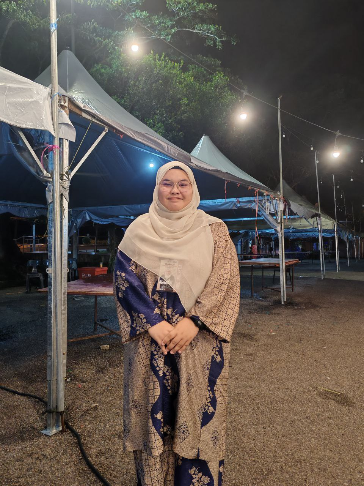
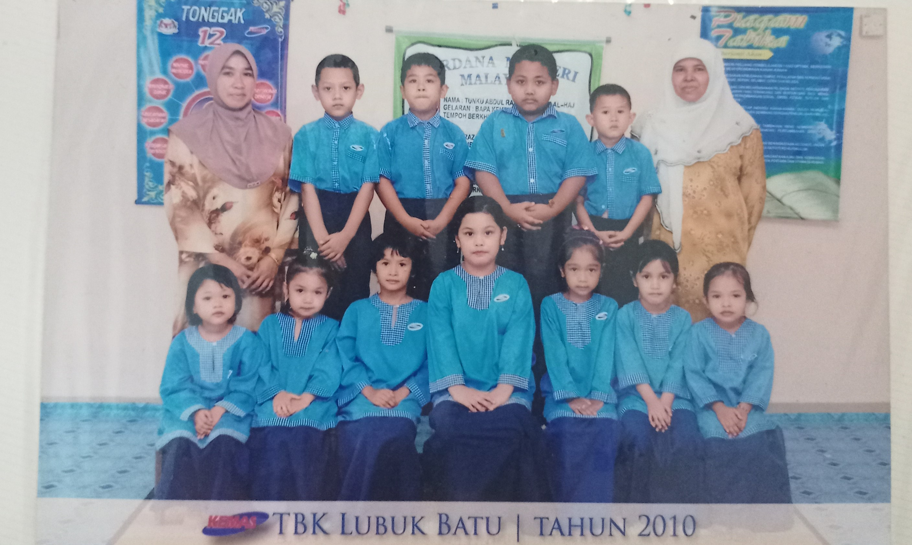
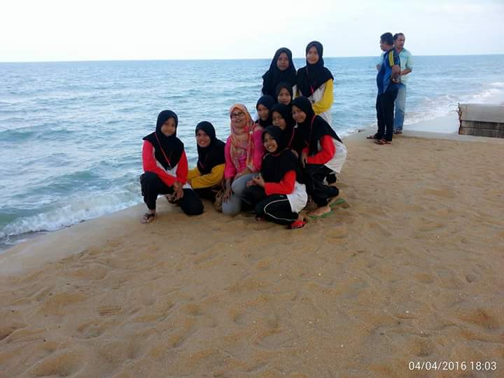
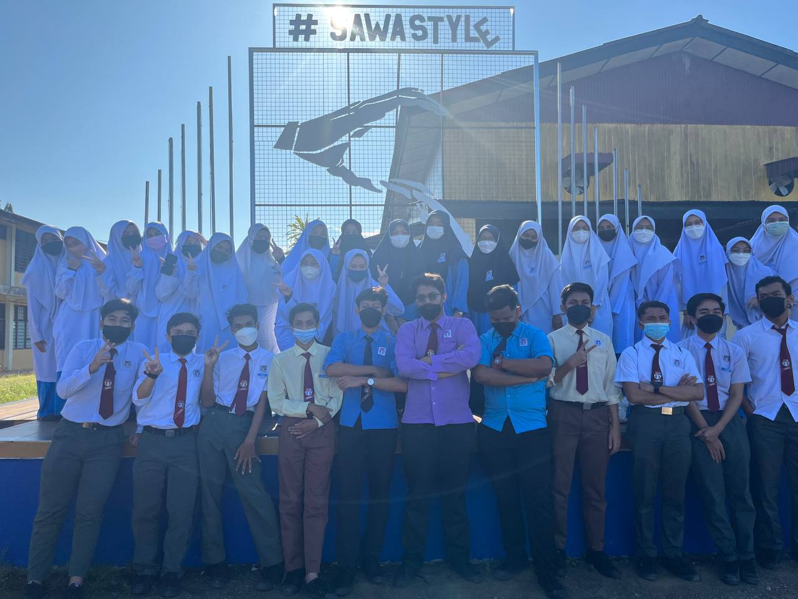
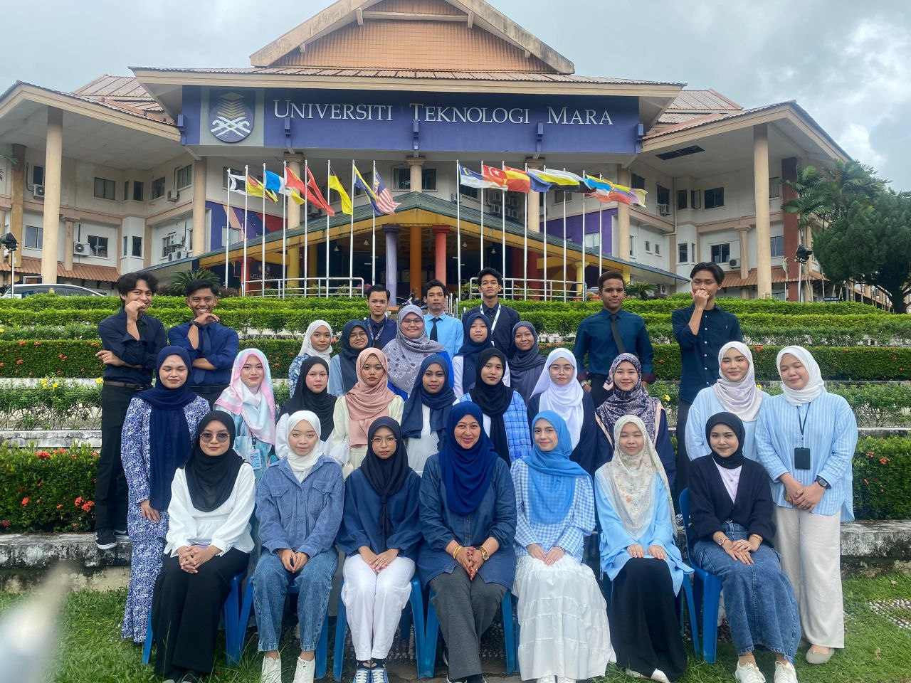

I started my education journey at Tadika Kemas Lubuk Batu for 2 years. Then, I continue my education in primary school at SK Bukit Sawa for 6 good years.
In 2017, I start my highscool at SMK Bukit Sawa. I'm so grateful that during school i have met a lot of good people around me that led me to have a wonderful memories.
After SPM, i further my studies in Diploma in Information at UiTM Machang ,Kelantan branch.
| Year |
Education |
| 2009-2010 |
Tadika Kemas Lubuk Batu |
| 2011-2016 |
SK Bukit Sawa, Marang, Terengganu |
| 2017-2021 |
SMK Bukit Sawa, Marang, Terengganu |
| 2022-Present |
UiTM Machang, Kelantan |
MY EXPERIENCE AND ACHIEVEMENT
2019
- Clothes Salaesperson (part-time)
2022
- Secretariat member of Dato' Onn College Representative Committe Session 22/23
- Bureau of Special Tasks (Search Program for the JPK Dato' Onn Secretariat)
- Bureau of Program and Activity (Charity Community Run Program)
2023
- Dean's List Awards
- Secretariat member of Dato' Onn College Representative Committe Session 22/23
- Bureau of Refreshment (EXPLORACE UiTMCK’s GO CLEAN GO GREEN PROGRAM )
- Committe member of the 15 th College Festivals
- Participated 'Young Inventor Competition Program:"Winning A Gold Medal"'
- Participated MUET Workshop
- Participated in UNGU SYNERGY: EMPOWERING SDG Webinar
- Participated in Olee OLee Zumba 2.0
- Participated in Motivation Program: Let's Heal Our Soul
2024
- Member of Dato' Onn College Representative Committee Session 23/24 (Exco Welfare and Safety)
- Committe member of the 16 th College Festivals
- Program Director of COMPASSION IN ACTION: BRINGING SMILES TO EVERYONE
- Bureau of Special Tasks ( FIESTA REKREASI DESA : KLASIK WARISAN NUSANTARA)
- Program Treasurer (INTERNATIONAL TALK: PREPARING TO FLY )
- Bureau of Refreshment (SNEAK PEEK OF SU: TIPS SURAT)
- Participated in Woman Self-Defense
- Participated in Code Voyage Program
- Practical Training at NATIONAL ARCHIVE OF MALAYSIA (TERENGGANU BRANCH)
Pictures during my Educational Journey
Pre-school

Middle School

High School

Diploma
